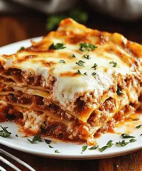

Lasagna Recipes

-
Ingredients
The Red Component (Meat Sauce / Bolognese)
- 500g Ground beef (lean or medium).
- 1 Yellow onion (finely chopped).
- 3 cloves Garlic (minced).
- 500g Tomato sauce (or your favorite marinara sauce).
- 2 tbsp Tomato paste (optional, for a richer flavor).
- Dry Herbs: 1 tsp Oregano, 1 tsp Basil, salt, black pepper, and a pinch of sugar..
The White Component (Bechamel Sauce)
- 50g Unsalted butter or margarine.
- 50g All-purpose flour.
- 600ml Full cream milk
- 100g Grated cheddar or Parmesan cheese.
- 1/4 tsp Nutmeg powder (this provides the signature Italian aroma).
The Base & Topping
- 1 box Lasagna sheets (Check if they are "No-Boil" or require pre-boiling).
- 200g Mozzarella cheese (shredded for that perfect cheese pull).
-
Instructions
Preparing the Sauces
- Cook the Meat Sauce: Saute the onion and garlic until fragrant. Add the ground beef and cook until browned. Pour in the tomato sauce, tomato paste, and herbs. Simmer on low heat for about 20 minutes until thickened.
- Cook the White Sauce: Melt the butter in a pan, add the flour, and whisk quickly for a minute. Gradually pour in the milk while whisking constantly to prevent lumps. Add the cheese and nutmeg, stirring until the sauce is smooth and thick.
The Assembly (Layering)
- Grease a heat-resistant baking dish (like a Pyrex) with a little butter.
- The Order:
- Bottom of the dish (a thin layer of meat sauce)
- Lasagna sheets
- Meat sauce
- White sauce.
- Repeat these layers 3–4 times until the dish is almost full.
- The Finishing Touch: Cover the final layer with the remaining white sauce and a generous amount of shredded mozzarella.
-
Baking & Serving
- Preheat your oven to 180°C.
- Bake for 30–40 minutes until the top is golden brown and bubbling.
- Crucial Tip: Once out of the oven, let it rest for 15 minutes. This allows the layers to "set" so they stay together when you slice and serve.